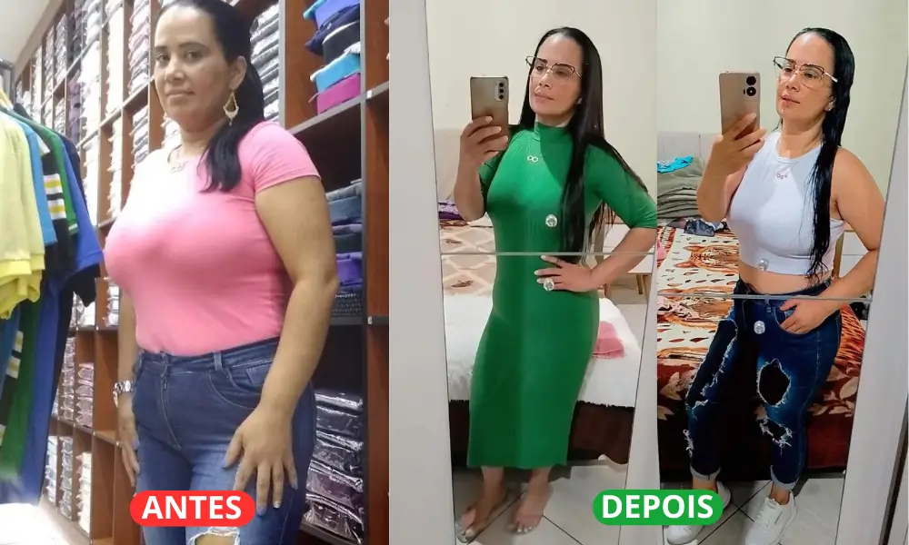

🔥 Histórias Reais de Transformação! 🔥
📍 Depoimento: Cláudia-Porto Alegre,RS
Claudia
Porto alegre ,RS
Eu já tinha tentado de tudo para emagrecer, mas nada funcionava. Depois de incluir os Chás Bariátricos na minha rotina, perdi 12kg sem mudar nada na minha alimentação! O mais incrível é que minha fome e ansiedade diminuíram naturalmente!
★★★★★